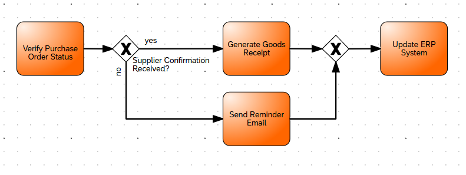

←
Gateways — XOR (Exclusive) • AND (Parallel) • OR (Inclusive)
Top bar selects the gateway demo; press Step to emit a token and demonstrate routing
Gateways demo
Tip: use Step to emit one token at a time.
XOR — Exclusive
XOR: Token chooses a single outgoing path — exclusive routing.
When emitted, the token picks one path; at merge points the first arriving token continues the flow.
Diagram (reference)

When AND splits into parallel tokens, they move together and then merge at the join gateway. The merged token then activates "Book Goods".